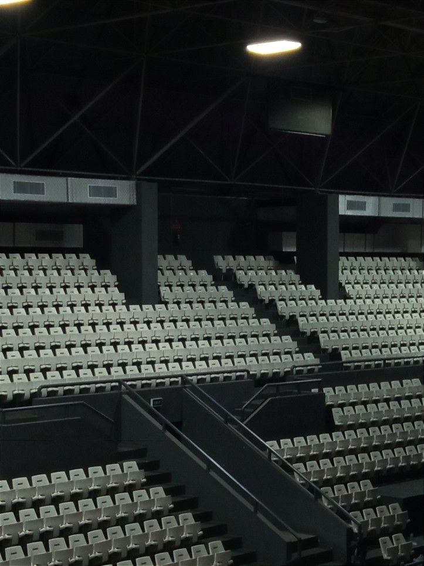

🏟️ JUSTICIA TARDÍA
Estadio de Hurlingham · Buenos Aires
Nicole observa desde las gradas. Abajo, Benjamín Esposito enfrenta al asesino. La lluvia mezcla el odio y la redención.
⚖️ EL VEREDICTO
El homicida nunca será liberado. La justicia, aunque tardía, encuentra su momento. Nicole siente un peso menos en la cámara.
“—Podés cambiar de pasado, pero no de futuro.”

✧ El momento del juicio ✧